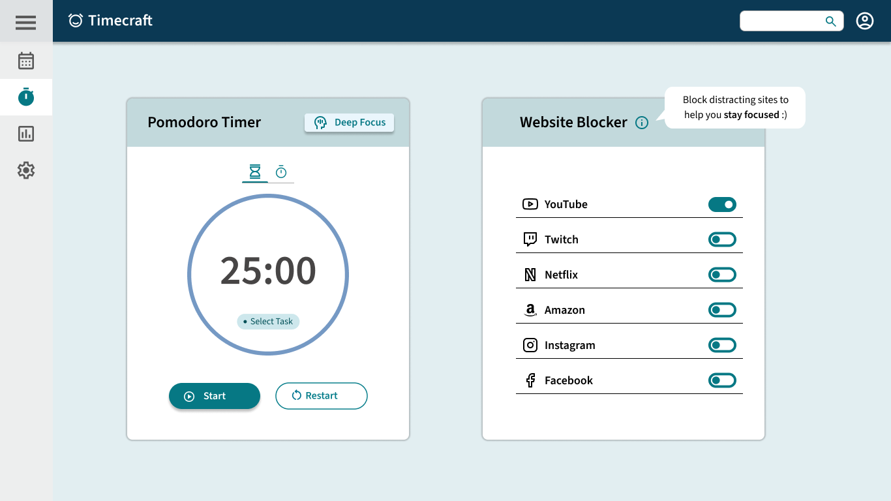

Timecraft 

Role
Timeline
3 Months
Spet 2023 - Dec 2023
Tools
Problem Statement
How might we help professionals and students who work and study from home to stay on top of their schedules without the traditional structure of a dedicated office or study space?
Remote workers and students face a unique set of challenges when it comes to managing their time. Although many enjoyed the flexibility offered by remote experiences, it also blurry the line between work and personal life.
In a Forbes article on remote work, data showed that when people are away from the computer during remote working hours, they tend to be doing household chores (72%) and running errands(37%). On top of that, 65% of the people reported that they have worked late to catch up the work they didn’t accomplish due to distractions. (article↗)
Research
User Interview
Remote workers and students tend to experience higher rates of distractions and less consistency in their schedule.

Our initial interview revealed that the biggest concern our users have on managing their time is distraction . This includes but not limited to household chores, games, social media. The second biggest concern is not able to maintain a routine due to the lack of dedicated physical space and structure.
Competitive Analysis
There is no existing time management tool that account for all the problems that remote workers and students face.
In addition to the interviews, I conducted a competitive analysis on 4 different time managment tools as they emerged during our interviews in order to have a better understanding of the strengths and weaknesses of exisitng tools.
| Tool | Event Management | Task Management | Focus Enhancement | Performance Analysis |
|---|---|---|---|---|
| Google Calendar | ✓ | ✓ | ✗ | ✗ |
| Todoist | ✗ | ✓ | ✗ | ✗ |
| Clockify | ✗ | ✓ | ✗ | ✓ |
| Forest | ✗ | ✗ | ✓ | ✓ |
Key Findings
After collecting and analyzing the data from interview as well as our competitive analysis, we discovered that there is a high demand for an all-in-one solution for:
- Task Tracking
- Event Management
- Focus Enhancement
- Asistance in building and maintaining a productive routine
Persona
Based on our initial research and user empathy map, we created the following personas to represent our target user group.

Design Process
Goals and Objectives
An all-in-one time management tool designed specifiacally for remote workers and students.
Based on the findings, I decided that the new design should not only offer intuitive and easy to access task and schedule management system, but it also aims to solve the two biggest problems remote-working professionals are facing :
-
Distractions around the house
-
Lack of motivation
Stage 1: Ideation and initial design

The sketches and initial design included all the essential elements that support the basic functions, including task and schedule management, focus enhancement and an achievement system for motivation.
Stage 3: Interactive Wireframe
Stage 4: Hi-fi Prototype
The interactive wireframe was used in usability testing to generate insights about how users interact with the intial system and identify rooms for improvement. We then used our hi-fi prototype to evaluate the effectiveness of the design iteration.
Sitemap
User Flow
Usability Test
Over 85% of our testers reported that they found the tool provided helpful visulization of tasks and that their favorite feature was perfomance anlysis.But there were a few issues to be addressed:
65% of the participants reported that they found it hard to distinguish between past and upcoming events
40% of the testers experienced difficulty in understanding and using the blocklist feature.
Design Iteration
Created color coding scheme to help users to tell the difference between past and upcoming events.

Renamed the blocklist to website blocker and added a tool tip to provide more information on its functionality.
Design system
Reflection
Takeaways
It was my first 0-1 design that allowed me to practice with foundamental research and design skills. I had gained valuable insights on user-centric data collection and analysis through conducting interview, usability testing and affinity mapping. For me, the experience highlighted the importance of data-driven design process and equipped me with essential knowledge on creating accessible experiences and products.
Next Steps
- Design a schedule builder for users to easily block off time and for better visualization of time allocations.
- Implement a monthly view of My Schedule for easy lookup of upcoming tasks and events.
- Work on the details on analysis and achievement, specifically the userflow of the points and badge system.